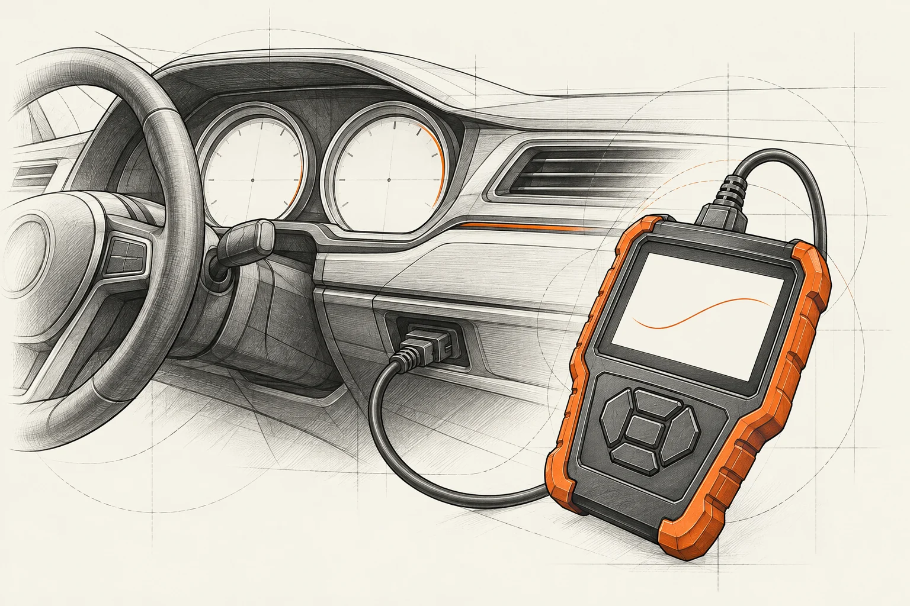

Świeci się kontrolka.
Sprawdź zalecenie w instrukcji auta. Sam kolor lampki nie wystarcza do oceny sytuacji.
Co warto przekazać?
- Jaki symbol i komunikat widzisz?
- Czy świeci stale, czy miga? Kiedy się pojawił?
Kontrolka, nowy dźwięk albo zmiana w zachowaniu samochodu? Wybierz sytuację podobną do swojej. Przygotuj opis do sprawdzenia auta — sam objaw nie jest diagnozą.

Sprawdź zalecenie w instrukcji auta. Sam kolor lampki nie wystarcza do oceny sytuacji.
Nie próbuj celowo odtwarzać objawu w ryzykownych warunkach.
Sam opis nie pozwala wskazać uszkodzonej części.
Jeśli hamowanie jest niesprawne, nie jedź na umówioną wizytę. Skorzystaj z pomocy drogowej.
To punkt wyjścia do kontroli, nie potwierdzenie potrzeby uzupełnienia czynnika.
Zakres obsługi ustala się z uwzględnieniem zaleceń producenta i historii auta.
Wskazówki bezpieczeństwa: instrukcja Ford Tourneo Connect / Transit Connect (PDF), rozdziały o ostrzeżeniach i hamulcach. To przykład instrukcji konkretnego modelu. Stosuj instrukcję swojego auta; strona nie zastępuje sprawdzenia pojazdu.
Napisz własnymi słowami, co się zmieniło. W formularzu demo użyj przykładowych danych — nic nie wysyłasz i nie rezerwujesz terminu.